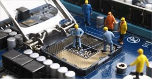

Es todo aquello que hacemos con el propósito de mantener nuestro ordenador funcionando de la manera más satisfactoria posible. Para esto hay que hacer una que otra prueba de vez en cuando, mientras más sistemáticos seamos más indoloro es el proceso. Todo con el objetivo de evitar la mayor cantidad de problemas, o de mitigar el daño en caso de una falla.
| Por temporalidad o frecuencia entenderemos el tiempo que transcurre entre un servicio de mantenimiento y otro. Se deben considerar los siguientes dos aspectos:
Si la PC está en un ambiente extremadamente sucio se le debe dar servicio en promedio cada tres meses.
Para la mayoría de los ambientes normales de oficina, el servicio se debe aplicar en promedio una o dos veces al año.

|